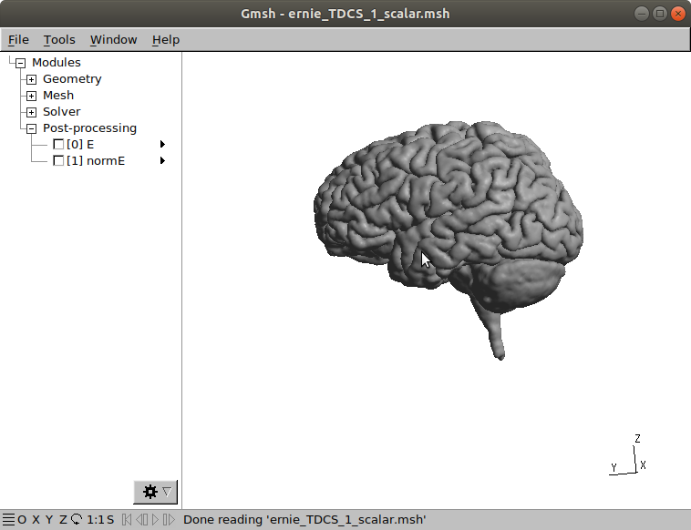

Visualizing Results¶
This tutorial comes after the tutorial on Setting up and Running Simulations. Please be sure to complete it before going further.
The final simulation results are in the Output Folder, which can be set in the GUI. By default, this folder is called simnibs_simulation/, and is located in the same folder as the mesh file.

For the current example, the output folder contains the following files and folders:
fsavg_overlays/: Contains surface overlays with fields in FsAverage spacemni_volumes/: Contains NIfTI volumes with fields in MNI spacesubject_overlays/: Contains surface overlays with fields in the subject specific space (same as the {subID}_T1fs_conform.nii.gz)subject_volumes/: Contains NIfTI volumes with fields in a subject specific spaceernie_TDCS_1_scalar.msh: Mesh with tDCS electrodes and electric fieldsernie_TMS_2-0001_MagStim_70mm_Fig8_nii_coil_pos.geo: Contains a simplified coil model showing it’s center and axes. For “.ccd” coil models, this is a more detail model showing dipoles.ernie_TMS_2-0001_MagStim_70mm_Fig8_nii_scalar.msh: Mesh with the TMS-induced electric fieldsimnibs_simulation_yyyymmdd.log: Simulation logsimnibs_simulation_yyyymmdd.mat: Simulation configuration file
Visualizing Results in MATLAB¶
SimNIBS 2.1.2 added new MATLAB functions for quickly visualizing simulation results. To use it, add matlab/functions/ subfolder of the SimNIBS installation directory, to the MATLAB path.
To load the tDCS simulation result in MATLAB, navigate to the output folder and call in a MATLAB terminal
m = mesh_load_gmsh4(‘ernie_TDCS_1_scalar.msh’)
mesh_show_surface(m)
Visualizing Results in Gmsh¶
Gmsh is a powerfull program for 3D visualization. However, it has somewhat steep learning curve. Here we will give the basics as to how to visualize simulation results in Gmsh
Attention
For Windows and MacOSX users, we recommended downloading and installing Gmsh from their website
Start Gmsh by double clicking in the
ernie_TDCS_1_scalar.mshfile (Windows and MacOSX, installation from Gmsh website), or by typing on a terminal window located at the output folder
gmsh ernie_TDCS_1_scalar.msh
The following window will appear

There, we see all the tissue and electrode surfaces. You can rotate the model with the left mouse button, translate it with the right button, and zoom with the mouse wheel
We will now visualize just the gray matter surface. First, go to Tools → Visibility

There you can select surfaces and volumes to be visualized. In SimNIBS, we have defined
1: White Matter volume
2: Gray Matter volume
3: Cerebrospinal Fluid (CSF) volume
4: Skull volume
5: Skin volume
6: Eye volumes (headreco models only)
101+: Electrode rubber layer volume
501+: Electrode Gel / Sponge volume
The corresponding surfaces have the number 1000 + volume value. For example, 1002 corresponds to the gray matter surface. The only exception are the electrode contacts, numbered 2100+. You can select multiple surfaces or volumes by holding Ctrl. Selecting 1002 and click OK

We have now a visualization the gray matter surface

4. Go to Tools → Options → Mesh and deselect Surface Faces

The model will momentarily disappear.
To visualize the norm of the electric field, click on normE on the left side of the main Gmsh window.

6. We now need to adjust the scale of the normE values. To do it, go to Tools → Options → View [1], set Range mode to Custom and set a reasonable max value, such as 0.35

This will give a view such as the one bellow

7. We recommend users to explore the many functionalities of Gmsh. One can, for example, produce the image bellow by selecting the Volume 2 for visualization an clipping the model in Tools → Clipping

Visualizing surface overlays in FreeView¶
Attention
FreeView is not avaliable on Windows. However, overlays can also be visualized using the MATLAB usign the mesh_load_fsresults and the mesh_show_surface functions
Attention
To obtain freeview surface files from simulations, please set the appropriate options from the GUI, in the SESSION structure (if scripting) or use the msh2cortex command line tool
freeview is a visualization tool by FreeSurfer. It allows visualization of the files in the subject_overlays/ and fsavg_overlays/ folders. You need to have FreeSurfer installed in order to use FreeView
In the subject_overlays folder, we have the files following the pattern
<hemisphere>.<simulation_id>.central.<field>.<scalar_quantity>
Where
hemisphere: Cortical hemisphere: either left hemisphere (lh) or right hemisphere (rh)
simulation_id: A name attributed to the simulation, with the subject id, type of simulation, a number, and in the case of TMS a coil position number and the name of the coil file
field: typically E (electric field) or J (current density)
scalar_quantity: Quantity calculated from the vector field:
angle: Angle of the field with a vector normal to the cortical surface, in radians. An angle of 0 indicates that the field vectors are pointing the outside the cortical surface, and an angle of π that the currents are pointing inside. An angle of π/2 indicates that the currents are flowing tangentially to the surface.
norm: Norm (i.e., length) of the electric field vector (that is, field strength).
normal: Component of the electric field pointing to the inside (negative values) or to the outside (positive values) of the cortical surface.
tangent: Component of the electric field tangent to the cortical surface.
normal: Component of the electric field pointing to the inside (negative values) or to the outside (positive values) of the cortical surface.
Additionally, we also have the lh.central and rh.central files. Those contain the cortical surface located halfway between the gray and white matter surfaces.
The fsavg_overlays/ folder has a very similar structure to the subject_overlays/ folder.
To start freeview run in a terminal window
freeview
2. Go to File → Load Surface and select the lh.central file to visualize the left hemisphere. To better view the surfaces, select the big white square and the 3D head on the top of the window.
After opening the surface, go to Overlay → Load Generic

Click on the folder icon to the right of Select overlay file and select the
lh.ernie_TDCS_1_scalar.central.E.normalfile

You can adjust the color scale by clicking on Configure

By adjusting the parameters, we can generate a visualization such as the one bellow

We can clearly see the electric field inflow (in red) in the posterior part of the gyri and the field outflow (in blue) in the anterior parts.
Visualizing Volumes¶
Attention
To obtain nifti volume files from simulations, please set the appropriate options from the GUI, in the SESSION structure (if scripting) or use the msh2nii or the subject2mni command line tool
The files in the subject_volumes/ and mni_volumes/ folders are NIfTI files.
Their file names have the format
<simulation_id>_<field>_[MNI].nii.gz
simulation_id: A name attributed to the simulation, with the subject id, type of simulation, a number, and in the case of TMS a coil position number and the name of the coil file
field: For vector quantities, such as E, we have 2 outputs: the vector field (which is 3-dimensional) and the norm of the vectors.
MNI: In the case of
mni_volumes/, the names are appended by MNI
The files can be visualized in any NIfTI viewer such as FreeView or FSLeyes.
Further Reading¶
For more information on visualization and simulation output, please see the SimNIBS 2.1 tutorial paper.